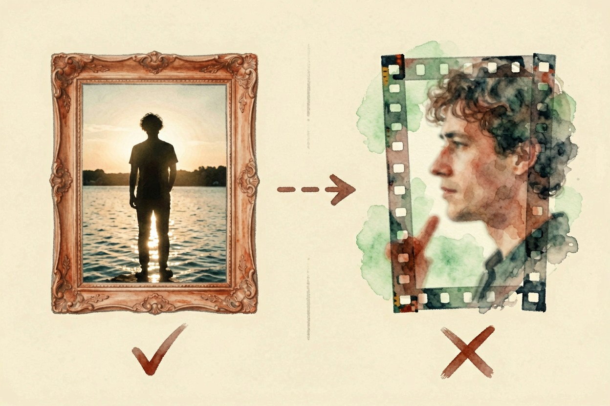
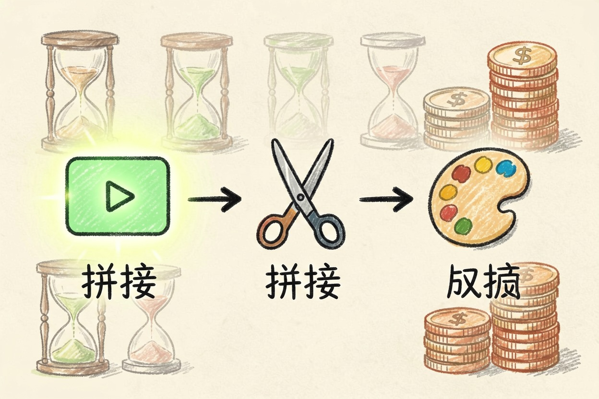

海螺 AI 视频好用吗？生成效果的实际表现 — Learntide
六秒之内它能给你一个漂亮瞬间，六秒之外就开始各种翻车。这个边界搞清楚，用起来就顺了。
海螺 AI 视频好用吗：先给一句结论

海螺 AI 视频好用吗？六秒以内的单镜头，它给的画面质感在国产模型里属于第一梯队。超过这个长度，问题就开始冒出来。
先摆结论。做短视频封面动效、产品展示、氛围空镜，它够用。做有情节、有对白、要连贯人物的成片，现在还不行。
它擅长的是「一个漂亮的瞬间」。你要的如果是一段完整的戏，得换思路。
画面质感和运动稳定性
光影是它最舒服的地方。逆光、雾气、水面反射这类场景，出片率明显高于同类。色彩也不飘，不会一帧一个色调。
运动是分水岭。镜头缓慢推拉、轻微环绕，稳得住。一旦要求快速运镜或大幅度动作，画面容易糊，边缘会出现拉丝。
人物是老问题。正面近景还行，侧脸转正的过程常出岔子，手指数量也经常不对。这不是海螺独有的毛病，但它没有解决。
多主体更难。画面里超过两个人，互相穿模的概率陡增。想清楚再生成，能省不少积分。
提示词怎么写才不浪费次数

它对中文提示词的理解不错，但吃「结构」。散文式的一大段描述，效果反而不如分块写。
[主体] 一位穿米色风衣的女性，侧身站在便利店门口
[动作] 缓慢抬头，看向画面右上方
[镜头] 固定机位，中景，轻微手持晃动
[光线] 夜晚，店内冷白光从左侧打过来，地面有积水反光
[风格] 写实，胶片颗粒，暖冷对比
[禁止] 不要变焦，不要切换镜头，不要出现文字按这个结构填，废片率能降一截。重点是「动作」那栏只写一个动作。写两个，它大概率两个都做不好。
还有个细节：中文提示词里少用形容词堆叠。「唯美梦幻高级感」这种词它接不住，写具体的光线和材质更有效。
负面描述很关键。明确写上不要切镜头，能挡掉很多莫名其妙的转场。
时长、清晰度和等待时间
单次生成的长度有限，想要长片得靠拼接。这意味着你得自己保证前后镜头的一致性，工作量不小。
清晰度够发社交平台，放大看细节仍有涂抹感。上大屏之前建议先过一遍补帧和锐化。
排队时间随时段波动。晚上高峰能等挺久，白天快很多。免费额度用完之后的价格，掏钱前去官网定价页扫一眼再决定。
积分消耗要算账。一条满意的片子，背后通常有三到五次失败。预算按这个比例留。
谁适合用，谁该绕开
自媒体做空镜、电商做产品氛围图动起来、设计师做概念演示，这些场景它性价比很高。
需要固定角色反复出现的账号，现在别指望它。同一个人在不同片段里长得不一样，观众一眼看出来。
甲方交付类的活儿也要谨慎。改一版就是重掷骰子，不像剪辑那样可控。
想省事的话，先用它出素材，再回剪辑软件里拼接调色，这套流程目前最稳。别一上来就想一键成片。海螺 AI 视频好用吗，答案取决于你把它放在流程的哪个位置。
本文信息核对于 2026-08-08。AI 产品的价格、免费额度与功能变动频繁，实际以各工具官网当前说明为准。